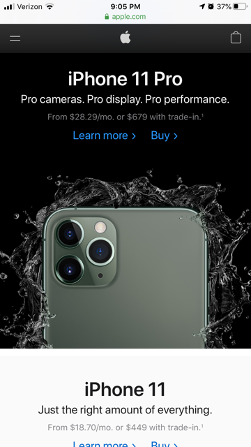

White Space and Clean Design
Apple.com uses white space really well. They use minimal text and the product pictures they use are only thier products with little to nothing else in them. Each picture is surrounded by ample white space, which draws the viewers eye to the picture. They also use mainly white with black accents which also helps to give the page a clean appearance.
Repetition

Disney.com is a good example of repetition. Throughout their site they repeatedly group similar things together in this 4-box layout. This makes it easier to see what things belong together and it also makes the site easier to navigate.
Contrast
starwars.com uses contrast really well. The background of their site is black, and the text is white, or another light, bright color (such as yellow) which makes it stand out quite a bit. They also use images with white backgrounds so that they stand out form the background of the site rather than blending in.